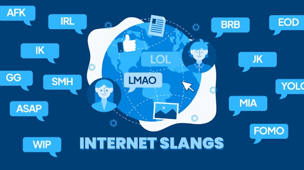

วิชาภาษาอังกฤษ

การเขียนภาษาอังกฤษเชิงวิชาการและการสื่อสารในเชิงธุรกิจไม่ได้อาศัยเพียงแค่ไวยากรณ์ที่ถูกต้อง แต่ต้องใช้ศิลปะแห่งวาทศิลป์ (Rhetoric) เพื่อสร้างอิทธิพลทางความคิด การใช้กลยุทธ์ตามหลักของอริสโตเติล ได้แก่ Ethos (ความน่าเชื่อถือ), Pathos (การอุทธรณ์ทางอารมณ์) และ Logos (การใช้เหตุผลและข้อมูล) เป็นหัวใจสำคัญในการเขียนบทความเชิงโต้แย้ง (Argumentative Essay) หรือสปีชโน้มน้าวใจ การฝึกฝนทักษะนี้ช่วยพัฒนาการคิดเชิงวิพากษ์ (Critical Thinking) และทำให้ผู้เรียนสามารถสื่อสารมุมมองของตนเองได้อย่างมีพลังและน่าเชื่อถือในระดับสากล